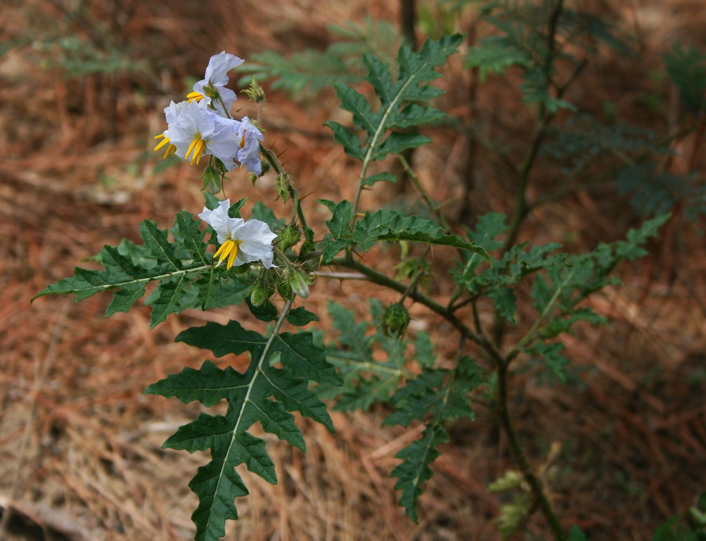

Breeding the Future of Food, Together.
A citizen science initiative to develop new and interesting plant varieties for the public good.
Explore Our ProjectsCurrent Projects

The Chromatic Squash Initiative
Using advanced in-vitro mutagenesis and selection to unlock novel antioxidant-rich colors in winter squash.
Learn More →
Litchi Tomato Domestication
Working to remove spines, improve productivity, and retain disease resistance in the intriguing Litchi Tomato (*Solanum sisymbriifolium*).
Learn More →Project Timeline
Winter 2025-2026
Phase 1 Launch
Squash: Seeking university/lab partners to begin the in-vitro cell culture and selection phase.
2026 Season
Foundation Grow-Outs
Litchi Tomato: We will grow out all collected varieties to identify natural variance and select the best strains for future breeding.
2027+ Seasons
Community Trials
Squash: Regenerated plants from Phase 1 will be grown out by the community to evaluate for new color traits.